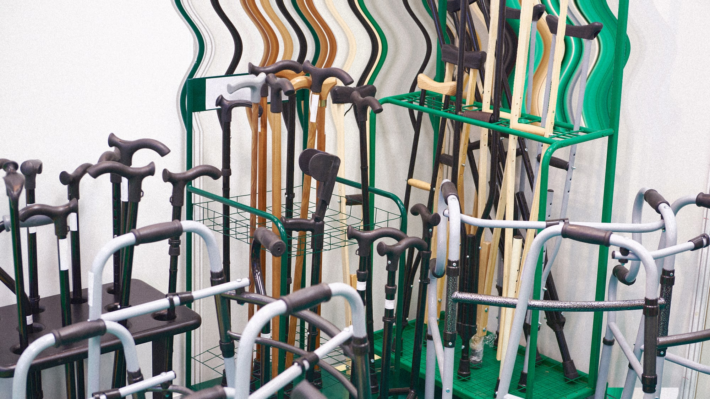
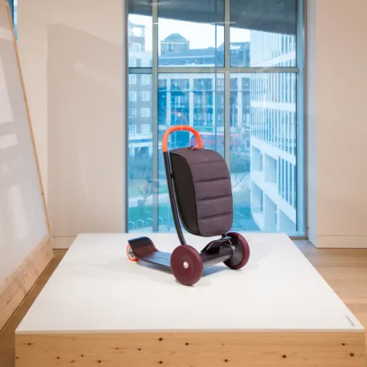

Introduction
More people than ever are living long, healthy lives. According to the U.S. Department of Health and Human Services, the average life expectancy is 78.6 years for men and 81.1 for women. More relevant, however, is that as people grow older, their total life expectancy increases. So for those who are now 65, the average life expectancy is 83 for men and over 85 for women. And because I’m 83, I’m expected to live past 90 (but I’m aiming a lot higher than that). And these are averages, which means that perhaps half of us will live even longer.
Those of us who are still active and healthy at advanced ages–I qualify–discover that we aren’t quite as capable as our younger selves. That doesn’t mean that we aren’t healthy and workable–I still have a very active job and travel on business around the world, but I have to admit that I’m getting slower and weaker, with diminished eyesight, hearing, taste, touch, and, well, almost everything physical. The number of active, healthy oldsters is large–and increasing.
We are not a niche market.
And businesses should take note: We are good customers often with more free time and discretionary income than younger people.
Despite our increasing numbers the world seems to be designed against the elderly. Everyday household goods require knives and pliers to open. Containers with screw tops require more strength than my wife or I can muster. (We solve this by using a plumber’s wrench to turn the caps.) Companies insist on printing critical instructions in tiny fonts with very low contrast. Labels cannot be read without flashlights and magnifying lenses.
And when companies do design things specifically for the elderly, they tend to be ugly devices that shout out to the world “I’m old and can’t function!” We can do better.
What older consumers want and need
As we age, we have more experience with life, which can make us better decision-makers and managers. Crystalized intelligence, it is called, and it gets better with experience. A caveat is that we often face physical changes that designers fail to account for into their work.
Vision deteriorates. The lens of our eyes harden, making focusing more difficult. I used to be able to read tiny text by holding it close to my eyes, but my inability to focus at close distances defeats that activity. Floaters and debris start accumulating inside the eye, which scatters the light on its way to the retina, reducing contrast and making it more difficult to see small,low-contrast objects. For the increasing number of people who have cataract surgery, the eye’s lenses have ben replaced with plastic, which usually have a fixed focus. (Artificial lenses that can be focused are under development.) A flashlight has become an essential item, whether the one built into many phones or carried separately, because illumination makes tiny type easier to read although even then, a magnifying glass might be useful.
Hearing decreases. High frequencies are first to go, which also tends to impair directional sensitivity, which in turn makes it more difficult to attend to someone in a crowded, noisy environment. Loud restaurants are torture. So, more and more, my wife and I select restaurants by their noise level rather than by their food quality. At home while watching TV, whether shows, streaming events, or movies, we always turn on the captions, which often block critical parts of the image. Even worse, when a film shows someone speaking in a foreign language, the film often translates the words, but so too does the closed captioning, and the two are placed on top of one another, making both attempts to help the viewer completely unhelpful.
Bad design abounds
The problems I face are much milder than those faced by millions of aging people. With so many of us needing better devices, why are so many things still designed in ways that defeat our ability to function?
Take the screen design for Apple’s phones. The designers at Apple apparently believe that text is ugly, so it should either be eliminated entirely or made as invisible as possible. Bruce Tognazzini and I, both former employees of Apple, wrote a long article on Apple’s usability sins ,which has been read by hundreds of thousands of people.
Once Apple products could be used without ever reading a manual. Today, Apple’s products violate all the fundamental rules of design for understanding and usability, many of which Tognazzini and I had helped develop.
As a result, even a manual is not enough: all the arbitrary gestures that control tablets, phones, and computers have to be memorized. Everything has to be memorized.
These thoughtless, inappropriate designs are not limited to Apple. New technologies tend to rely on display screens, often with tiny lettering, with touch-sensitive areas that are exceedingly difficult to hit as eye-hand coordination declines. Physical controls are by far the easiest to control–safer too, especially in safety-critical tasks such as driving a car, but they are disappearing. Why? To save a few cents in manufacturing and in a misplaced desire to be trendy. Speech can be a useful substitute for physical controls, though not as helpful as proponents claim.
Then there’s the aesthetic problem. When products are developed for the elderly, they tend to be ugly and an unwanted signal of fragility. As a result, people who need walkers or canes often resist. Once upon a time, a cane was stylish: Today it is seen as a medical device. Why can’t we have walkers and canes for everyday use, to help us in everyday life, to carry our packages, provide a way to sit when we are tired, or viewing some event, and yes, to maintain our balance? Make them items of pride, stylish enough that everyone will want one.
Everyone needs better design
Do not think that thoughtful design is just for the elderly, or the sick, or the disabled. Curb cuts were meant to help people who had trouble walking, but it helps anyone wheeling things: carts, baby carriages, suitcases.
In the field of design, this is called “inclusive design” for a reason: It helps everyone.
Closed captions are used in noisy bars. As Kat Holmes points out in her book Mismatch, all of us are disabled now and then. Some of us have permanent disabilities, but all of us have suffered from situational and temporary problems. When outside in the sun, the text message that just arrived is unreadable: wouldn’t it be nice if the display, whether cellphone, watch, or tablet, could switch to large, higher contrast lettering? Are elderly people handicapped? Maybe, but so is a young, athletic parent while carrying a baby on one arm and a bag of groceries in the other (and perhaps trying to open their car door). Ride-share bicycles and scooters cannot be used by people who need to carry bulky packages.
Everyone has difficulty hearing people in noisy environments. Noise-canceling headphones are for everyone, not just the elderly. Almost anything that will help the elderly population will end up helping everyone.
The promise of good design
Jeremy Myerson, a designer at London’s Royal College of Art (and a good friend) curated an enticing exhibit at London’s Design Museum entitled “New Old,” that explored the potential for design and designers to enhance the experience of our later lives (described in this Fast Company article Why you should be designing for your 73-year-old self). Walkers, scooters, and shopping carts for the elderly tend to lack any semblance of grace or elegance. Not so the “scooter for life,” designed by the British firm PriestmanGoode, which has three wheels for stability and a sleek pouch for storing groceries.
Powerful lightweight motors and batteries promise to motorize many new things, including walkers, wheelchairs, bicycles, tricycles, baby carriages, and shopping carts. I’ve even seen electric surfboards. If these devices are stylish and useful, they will empower everyone, from the very young to the very old. Moreover, once the stigma attached to devices that look medical is eliminated, we will see more elderly adding to their activities, and more 90-year-olds surfing. One of my 90-year-old friends just started scuba diving. Age is not a barrier.
Are there any other examples of promising designs for older people? Yes, but they are surprisingly difficult to find. They are so rare that when they are found, museums put on them on exhibit and newspapers write articles.
Designers and companies of the world, you are badly serving an ever-growing segment of your customer base, a segment that you too will one day inhabit. Isn’t it time to reform: to make things that are functional and stylish, useable and accessible? Every ailment that I described that impacts the elderly is also present in people of all ages. Designs that make it easier for elderly people often are of equal value for younger people.
In fact, for everyone. Help the elderly, and the results will help many more, including yourself, someday.